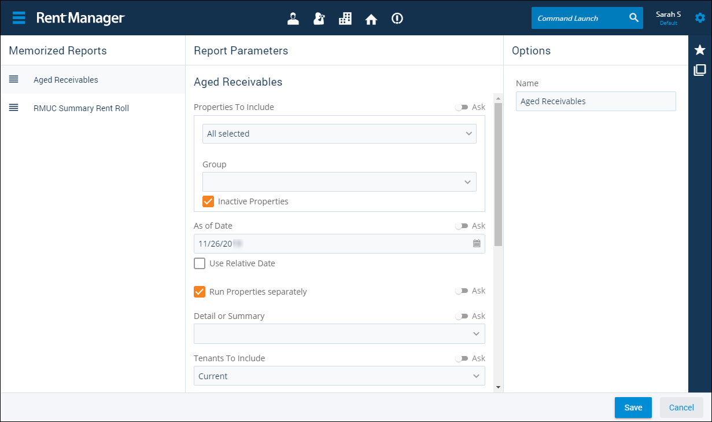

Source: https://rmxhelp.rentmanager.com/Topics/Express/CSH/Report-Memorized.htm
Memorized Reports (Page)
Memorized reports are reports that have been saved for later use by Rent Manager users. These reports can be quickly generated in the future without re-selecting the report options. It is also possible for you to adjust the settings so that a user running a memorized report is prompted to provide certain options.
Related Privileges
| Group | Privilege | Column |
|---|---|---|
| Letter/Email Templates/Reports/Packets | Run reports | Enabled |
Additionally, on the Reports tab, you must have access to the corresponding report in the Reports section.
For more information, refer to Control User Access.
To view existing memorized reports, go to  arrow_forward
arrow_forward  Edit Memorized. Reports which have already been memorized display in the menu.
Edit Memorized. Reports which have already been memorized display in the menu.

Memorize A Report
To memorize a report in Rent Manager Express, follow the steps below.
-
After selecting the options of any report, on the action bar to the right, click .
The Memorize Report pop-up displays. -
Enter a Name for this memorized report.
-
Click Save.
The report is added to both the Memorized Reports menu and the Memorized Reports page.
Generate a Memorized Report
Memorized reports can be generated from the menu by navigating to  arrow_forward
arrow_forward  Edit Memorized and select the memorized report you wish to run. Then on the action bar to the right, click
Edit Memorized and select the memorized report you wish to run. Then on the action bar to the right, click  arrow_forward Run Memorized Report.
arrow_forward Run Memorized Report.
Manage Memorized Reports
Once a memorized report has been created, you can manage that report in several ways from the Memorized Reports page.
View or Edit Memorized Report Options
To change the report options for an existing memorized report, follow the steps below:
-
Select the desired memorized report from the Memorized Reports section.
-
In the Report Parameters section, adjust the report options as desired.
-
Optionally, toggle Ask next to any options that require a value from the user generating the report.
-
Optionally, in the Options section, change the Name of the memorized report.
-
Click Save.
The memorized report is updated with your changes.
Reorder Memorized Reports
To change the order in which memorized reports display in both the menu and the Memorized Reports page, follow the steps below:
-
In the Memorized Reports section, click and drag
 next to each report to re-order the reports in the list.
next to each report to re-order the reports in the list. -
Click Save.
The order of the memorized reports is updated.
Delete a Memorized Report
To remove a memorized report, select the report in the list. Then on the action bar to the right, click  arrow_forward Delete. Click Yes on the pop-up to confirm the action.
arrow_forward Delete. Click Yes on the pop-up to confirm the action.